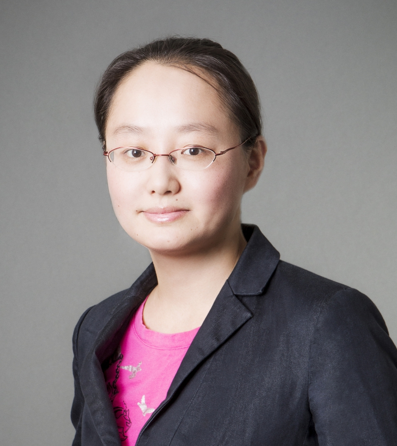
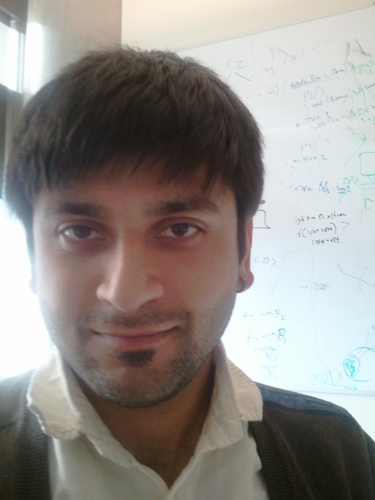

Keynotes
Keynote Session 1
Towards Fast, Scalable and Generalized Network Performance Estimation
Baochun Li, University of Toronto, Canada
The unprecedented surge in the scale of network topologies and traffic has fueled a pressing demand for rapid simulation of new network designs, prior to both emulation and real-world deployment. However, conventional network simulation techniques do not scale well, due to their high computational costs and low degrees of parallelism. In response, network performance estimators have emerged as a promising alternative, leveraging parallel inference of deep neural networks for acceleration. However, these estimators still face challenges in achieving satisfactory scalability and generality.
In this talk, we introduce some of our recent work on improving the performance, scalability and generality of network performance estimation. I will first introduce DeepQueueNet, our work on using deep neural network models to emulate the behaviour of network devices, supporting arbitrary network topologies and device traffic management mechanisms. For generating training data samples, the design and implementation of DeepQueueNet depended upon our recent work on a new Python-based discrete event simulator, which I developed from scratch. Our extensive experiments showed that DeepQueueNet achieved near-linear speedup in the number of GPUs, and its estimation accuracy for average and 99th percentile round-trip time outperforms existing end-to-end DNN-based performance estimators. I will conclude the talk with key insights in our ongoing work to improve DeepQueueNet.
Biography
 Baochun Li received his B.Engr. degree from the Department of Computer Science and Technology, Tsinghua University, China, in 1995 and his M.S. and Ph.D. degrees from the Department of Computer Science, University of Illinois at Urbana-Champaign, Urbana, in 1997 and 2000. Since 2000, he has been with the Department of Electrical and Computer Engineering at the University of Toronto, where he is currently a Professor. He holds the Bell Canada Endowed Chair in Computer Engineering since August 2005. His current research interests include cloud computing, security and privacy, distributed machine learning, federated learning, and networking.
Baochun Li received his B.Engr. degree from the Department of Computer Science and Technology, Tsinghua University, China, in 1995 and his M.S. and Ph.D. degrees from the Department of Computer Science, University of Illinois at Urbana-Champaign, Urbana, in 1997 and 2000. Since 2000, he has been with the Department of Electrical and Computer Engineering at the University of Toronto, where he is currently a Professor. He holds the Bell Canada Endowed Chair in Computer Engineering since August 2005. His current research interests include cloud computing, security and privacy, distributed machine learning, federated learning, and networking.
Dr. Li has co-authored more than 450 research papers, with a total of over 24000 citations, an H-index of 87 and an i10-index of 323, according to Google Scholar Citations. He was the recipient of the IEEE Communications Society Leonard G. Abraham Award in the Field of Communications Systems in 2000, the Multimedia Communications Best Paper Award from the IEEE Communications Society in 2009, the University of Toronto McLean Award in 2009, and the Best Paper Award from IEEE INFOCOM in 2023. He is a Fellow of the Canadian Academy of Engineering and a Fellow of IEEE.
Collaborative Research and Development in 5G Technology: Insights from Rogers Communications' Partnership with Academia
Wilson Tam, Director 5G Innovation at Rogers, Canada
Since 2019, Rogers Communications has engaged in a strategic collaboration with two prominent Canadian institutions: the University of Waterloo in Ontario and the University of British Columbia (UBC) in BC. This collaboration has been dedicated to advancing research and development endeavors, with a primary focus on the dynamic realm of 5G technology and its multifaceted use cases. Rogers has demonstrated its substantial commitment by investing millions of dollars in the establishment of 5G smart campuses at both universities, providing services across the low-band, mid-band, and mmWave band spectrums, both indoors and outdoors. Furthermore, Rogers has fostered partnerships for over 20 funded research and development projects, all aimed at exploring ground breaking 5G technologies and their potential use cases
A standout partnership with the University of Waterloo has centered around pioneering work in network slicing, Open Radio Access Network (ORAN), and smart operation & planning of 5G networks.
Additionally, several pivotal projects conducted in collaboration with Waterloo have spanned areas such as asset tracking, teleoperation using robots, edge computing, remote inspection of structures, and autonomous vehicles.
In this presentation, we will share valuable insights gained from our collaborative journey. Additionally, we will explore the technical knowledge we've developed through our active involvement in transformative projects. This includes insights from deploying 28GHz mmWave small cells as part of the 5G smart campus initiatives at Waterloo and UBC.
Biography
Wilson Tam is a telecommunications leader with over 23 years of experience working in both Wireless and Cable industry. He’s currently working at Rogers as a Director of 5G Technology Partnerships and Innovation, leading the academic R&D engagements and technical solutioning with key partners across industry sectors. He’s responsible for network architecture and technical solutioning for 5G and Edge Compute enabled applications across multiple verticals including Smart Cities, Connected Vehicles, Sports Entertainment, Public Safety, and Healthcare sectors. Prior to his current role, Wilson worked in various leadership positions in telecom including Network Strategy Development, as well as Wireless and Wireline Access network architecture design. He’s also an experienced entrepreneur, where he founded several start-ups in the renewable energy and recreational sports space. He a certified Professional Engineer of Ontario, with an Electrical Engineering B.SC degree from University of Toronto.
Keynote Session 2
Network Management in the Machine Learning Era
Minlan Yu, Harvard University, USA
Network management is essential for maintaining high performance, security, and reliability in large scale networks. Network management involves measuring network state, making decisions for various management applications, and enforcing the decisions into individual devices. In lieu of recent progress in machine learning, one natural question is how should we build network management systems to better leverage these emerging techinques.
In this talk, I will discuss three key challenges in building future management systems driven by ML: How to collect a large amount of diverse data to feed into ML systems, how to enable fast and accurate management decisions using ML, and how to enable fast reaction to network events. I'll show a few example systems we built to address these challenges: The first system is DTA, a direct telemetry access framework that aggregates and moves hundreds of millions of reports per second from switches into queryable data structures in collectors’ memory; the second system is Teal, a learning-based algorithm that leverages the parallel processing power of GPUs to accelerate traffic engineering control; finally, I'll discuss our preliminary ideas on enabling fast reactions to network events.
Biography
 Minlan Yu is a Gordon McKay professor at Harvard School of Engineering and Applied Science. She’s the assistant director of the SRC/DARPA JUMP 2.0 ACE Center for Evolvable Computing. She received her B.A. in computer science and mathematics from Peking University and her M.A. and PhD in computer science from Princeton University. She has actively collaborated with companies such as Google, AT&T, Microsoft, Facebook, and Intel. Her research interests include data networking, distributed systems, enterprise and data center networks, and software-defined networking. She received the ACM-W rising star award, NSF CAREER award, and ACM SIGCOMM doctoral dissertation award. She served as PC co-chair for SIGCOMM, NSDI, HotNets, and several other conferences and workshops.
Keynote Session 3
From research to product: Lessons from developing a network verification tool
Ratul Mahajan, University of Washington, USA
Batfish is a tool to analyze network configurations that is in use at many large enterprises. This talk describes its journey from a research prototype to an industrial-strength product, guided by scalability, fidelity, and usability challenges encountered when analyzing complex, real-world networks. I will share key lessons from this evolution, including how Datalog-based logic programming had significant limitations when generating and analyzing forwarding state and how binary decision diagrams (BDDs) proved highly versatile. I also describe new techniques for addressing real-world challenges, which increase Batfish performance by three orders of magnitude and enable high-fidelity analysis of networks with thousands of nodes within minutes. I end with observations on key blockers (and ongoing work) on broader use of network verification, including the lack of automation inside most networks and lack of feedback on test quality.
Biography
 Ratul Mahajan is an Associate Professor at the University of Washington (Paul G. Allen School of Computer Science). He is also the co-director of UW FOCI (Future of Cloud Infrastructure) and an Amazon Scholar. Prior to that, he was a Co-founder and CEO of Intentionet, a company that pioneered intent-based networking and network verification, and a Principal Researcher at Microsoft Research. He got his PhD at the University of Washington and B.Tech at Indian Institute of Technology, Delhi, both in Computer Science and Engineering.
Ratul is a computer systems researcher with a networking focus and has worked on a broad set of topics, including network verification, connected homes, network programming, optical networks, Internet routing and measurements, and mobile systems. He has published over fifty papers in top venues such as SIGCOMM, SOSP, MobiCom, CHI, and PLDI, and many of the technologies that he has helped develop are part of real-world systems at Microsoft and other companies.
Ratul has been recognized as an ACM Distinguished Scientist, an ACM SIGCOMM Rising Star, and a Microsoft Research Graduate Fellow. His papers have won the ACM SIGCOMM Test-of-Time Award, the IEEE William R. Bennett Prize, the ACM SIGCOMM Best Paper Awards (twice), and the HVC Best Paper Award.
A conversation with Ibrahim Gedeon, CTO at Telus, Canada
Ibrahim Gedeon, CTO at Telus, Canada
Abstract: TBD
Biography
 Ibrahim Gedeon has built a career in telecommunications by combining insight and skill as an applied scientist with a collaborative approach to leadership. As Chief Technology Officer for TELUS, a leading telecommunications company in Canada, he is responsible for innovation, technology development and strategy. Under Ibrahim’s leadership, the TELUS broadband network has been independently awarded as one of the best in the world.
Ibrahim Gedeon has built a career in telecommunications by combining insight and skill as an applied scientist with a collaborative approach to leadership. As Chief Technology Officer for TELUS, a leading telecommunications company in Canada, he is responsible for innovation, technology development and strategy. Under Ibrahim’s leadership, the TELUS broadband network has been independently awarded as one of the best in the world.
Ibrahim is a passionate collaborator with industry partners to advance social capital and purpose. He serves on the boards of the Digital Identification and Authentication Council of Canada, the Next Generation Mobile Networks Alliance, the Alliance for Telecommunications Industry Solutions and the Institute for Communication Technology Management. In addition to his industry leadership roles, Ibrahim is a Fellow of both the IEEE and the Canadian Academy of Engineering, recognition for significant contributions to the field of engineering. He has been awarded many accolades for his leadership and industry contributions, and is deeply passionate about promoting diversity & inclusion and early career growth, having developed TELUS’ Graduate Technology Leadership Program. He is also a frequent executive sponsor of Women in STEM events across the company, nationally, and on a global level.
Ibrahim holds a Bachelor's degree in Electrical Engineering from the American University of Beirut, a Master’s in Electronics Engineering from Carleton University and an Honorary Doctor of Laws degree from the University of British Columbia. He is passionate about supporting engaged, high-performing teams to innovate and move technology forward.